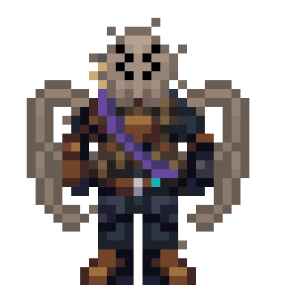
Паукоподобные существа. Арахнофобам не лезть.

 ДС
ДС
 Мон.
Мон.
 Бусти
Бусти
Powered by: nothing

Паукоподобные существа. Арахнофобам не лезть.
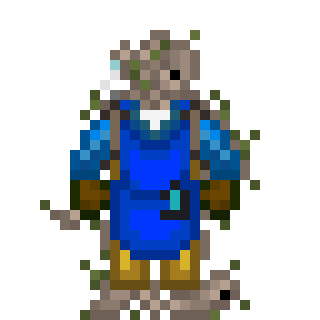
Сплетение разумных нимфоподобных существ, образующих существо с общими потребностями и разумом.
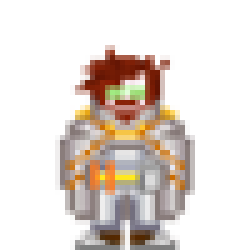
Человекоподобные существа низкого роста, маленькие любители пива.
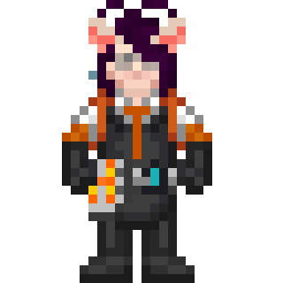
Гуманоидная раса в основании которой лежит человеческий ген, искажённый и закрепившийся в результате определённых событий.
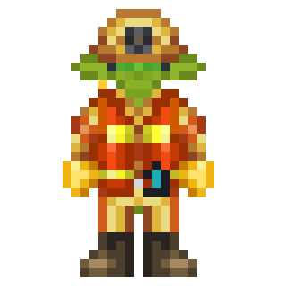
Человекоподобная раса с зелёным цветом кожи.
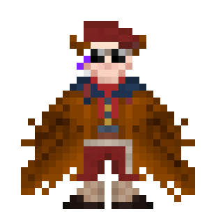
Гуманоидная раса птицеподобного вида.
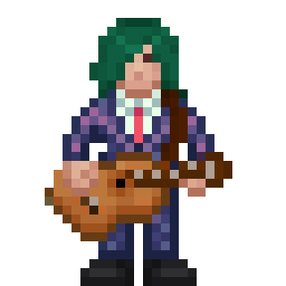
Самая распространённая раса в галактике. Родной мир — планета Земля.
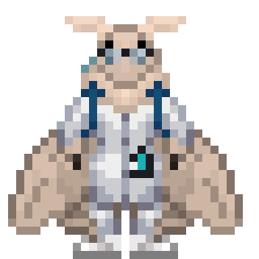
Подземные обитатели, что обрели свободу благодаря корпорациям и государствам. Милые гуманоидные насекомые, которые довольны, по большей части, всему.
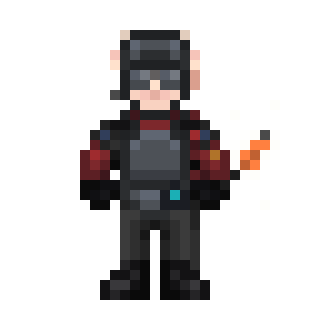
Представьте что тут нормальное изображение и есть описание.
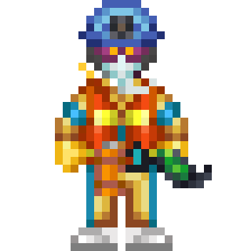
Представьте что тут нормальное изображение и есть описание.
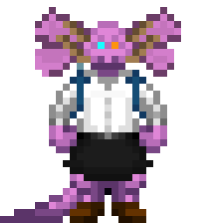
Ящероподобные существа с планеты Д’тхун.
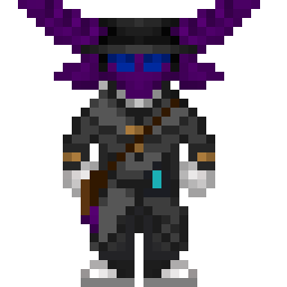
Двуногие прямоходящие существа напоминающие людей. Хотя они и похожи на млекопитающих, они ими не являются.
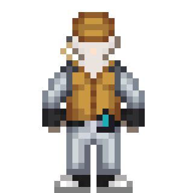
Раса желеобразных и полупрозрачных существ из обширных океанов тропического мира Ксарксис 5
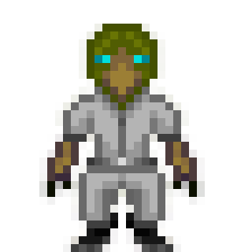
Существа птицеподобного вида. Формируют рейдовые отряды, изолированы от общества. Любят семечки.
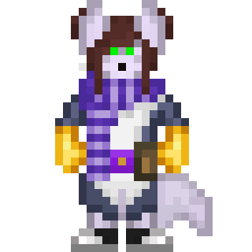
Раса воинов с планеты Далти'Шар. Гордый народ со своим чувством долга и чести, что через кровавую историю проложил путь к миру и космосу.
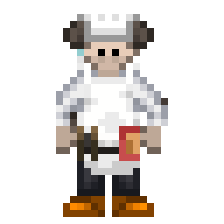
...
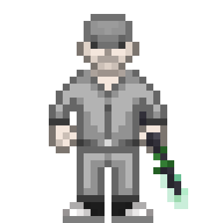
...
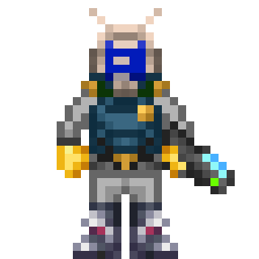
...